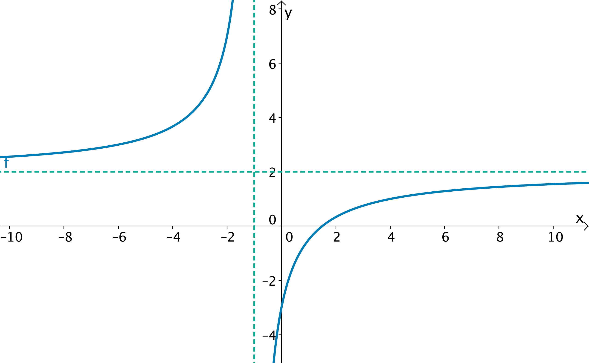
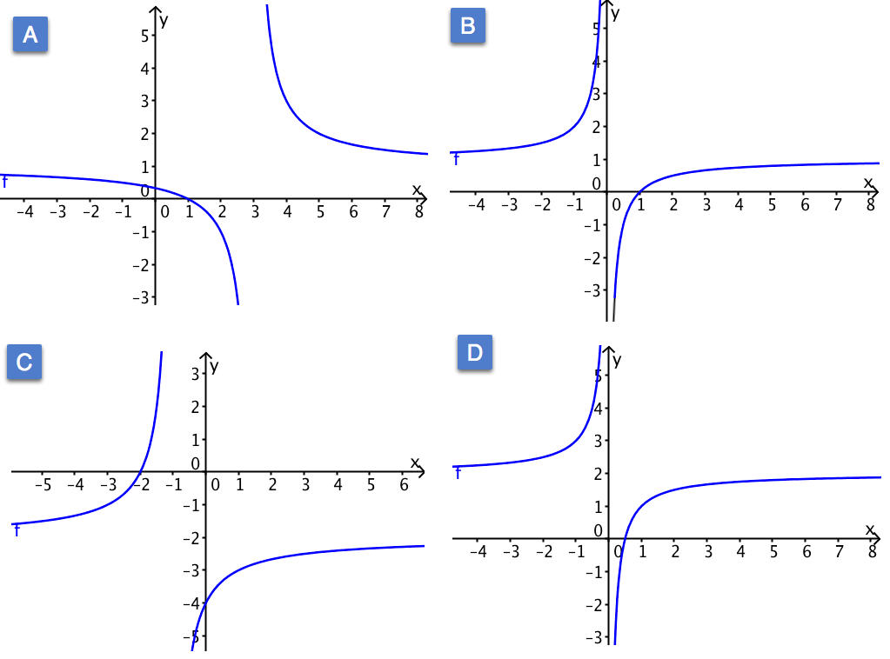

Rasjonale funksjoner
Contents
Rasjonale funksjoner¶
Bilde: Giordano Rossoni på Unsplash
Etter å ha sett på polynomfunksjoner har turen kommet til å se på en ny type funksjoner.
Målet er at du skal
vite hva en rasjonal funksjon er
vite hvordan grafen til en rasjonal funksjon ser ut
kunne analysere og utforske egenskaper til slike funksjoner.
Et tall er rasjonalt dersom det kan skrives som en brøk \( \dfrac{m}{n}\), hvor \(m\) og \(n\) er hele tall og \(n \neq 0\).
På tilsvarende måte kan du skape en rasjonal funksjon. Hvis \(f(x)\) kan skrives som en brøk, hvor teller og nevner er polynomer, er \(f(x)\) en rasjonal funksjon. Det vil si at dersom
der \(p(x)\) og \(q(x)\) er polynomer er \(f(x)\) en rasjonal funksjon.
Hvordan kan vi bestemme definisjonsmengden til \(f\)?
Du skal se særlig på tilfellene der funksjonene kan skrives på formen
der \(a, b, c\) og \(d\) er reelle tall. Slike funksjoner blir også kalt for brøkfunksjoner og grafen til \(f(x)\) kalles en hyperbel.
Du skal blant annet kunne finne definisjonsmengden og verdimengden til slike funksjoner og du skal kunne skissere grafene.
Vertikale asymptote¶
Eksempel
Hva er definisjonsmengden til funksjonen \( f(x)=\dfrac{2x-3}{x+1}\)
Husk at definisjonsmengden \( D_f\) til funksjonen \(f\) er mengden av alle mulige innverdier \(x\) kan være lik.
«Problemet» med denne funksjonen er at du deler på null dersom \(x=-1\). Derfor er ikke \(x=-1\) med i definisjonsmengden. Alle andre tall går bra. Derfor skriver vi \(D_f=\mathbb{R}\setminus \{-1\}\). Dette betyr alle reelle tall utenom \(-1\).
Grafen til funksjonen ser slik ut:

Legg merke til at når \(x\) nærmer seg \(x=-1\) så går \(f(x)\) enten mot uendelig eller minus uendelig.
Legg også merke til at når \(x\) blir veldig stor, så nærmer \(f(x)\) seg \(y=2\).
Vi kaller de to linjene for asymptoter:
x = -1 er en vertikal asymptote
y = 2 er en horisontal asymptote
En asymptote er ei linje som grafen nærmer seg, når \(x\) går mot en bestemt verdi eller mot \(\pm \infty\).
Hvordan bestemme asymptotene?¶
I videoen nedenfor viser vi hvordan du bestemmer asymptotene til en brøkfunksjon og hvordan du kan bruke disse til å tegne grafen.
Funksjonen i eksempelet er \( f(x)=\dfrac{3x-2}{2x-2}\). Prøv å bestemme asymptotene og lag en skisse av grafen før du ser videoen.
Oppgave 1
Hvilke av tallene a, b, c og d påvirker hvor horisontal asymptote ligger?
Hvilke av tallene a, b, c og d påvirker hvor vertikal asymptote ligger?
Hvilke tall påvirker ikke grafens asymptoter?
Oppgave 2
Hvilke asymptoter har funksjonen \(f(x)=\dfrac{6x-1}{3x-3}\) ?
Oppgave 3
Nedenfor ser du fire grafer. Hvilken passer med funksjonene?

\(f(x)=\dfrac{x-1}{x}\)
\(g(x)=\dfrac{x-1}{x-3}\)
\(h(x)=\dfrac{2x-1}{x}\)
\(k(x)=\dfrac{-2x-4}{x+1}\)
Fasit
Grafen til \(f\) er B
Grafen til \(g\) er A
Grafen til \(h\) er D
Grafen til \(k\) er C.
Oppgave 4
Funksjonen \(f\) er gitt ved $\( f(x)=\dfrac{2x-4}{x+5}\)$
Ta frem blyant og papir og bestem eventuelle nullpunkt til funksjonen.
Løsning
Vi vil løse likningen \(f(x)=0\):
En brøk er null der teller er 0. Dette gir oss at
Løser vi denne, får vi at \(x=2\). Altså har \(f\) ett nullpunkt, nemlig \(x=2\).
Oppsummering¶
Bilde som viser en hyperbel. Rasjonale funksjoner En funksjon som kan skrives som en brøk av polynomer, kalles en rasjonal funksjon.
Generelt kan en rasjonal funksjon skrives som
der \(p(x)\) og \(q(x)\) er polynomer.
Definisjonsmengden til \(f\) er alle mulige verdier bortsett fra de punktene der nevner er lik null.
Hyperbel
Grafen til en rasjonal funksjon på formen
hvor \(a, b, c\) og \(d\) er fire reelle tall, kaller vi en hyperbel.
Definisjonsmengden til \(h\) er \( D_h = \mathbb{R} \backslash \{-\frac{d}{c} \}\).
Asymptoter til en hyperbel
En hyperbel har
vertikal asymptote \( x=-\dfrac{d}{c}\)
horisontal asymptote \( y=\dfrac{a}{c}\) Når vi skal løse oppgaver knyttet til slike og andre funksjoner kan det være lurt å bruke et digitalt verktøy. Du finner nullpunkt og skjæringspunkt mellom grafene til slike funksjoner på samme måte som for andre funksjoner.